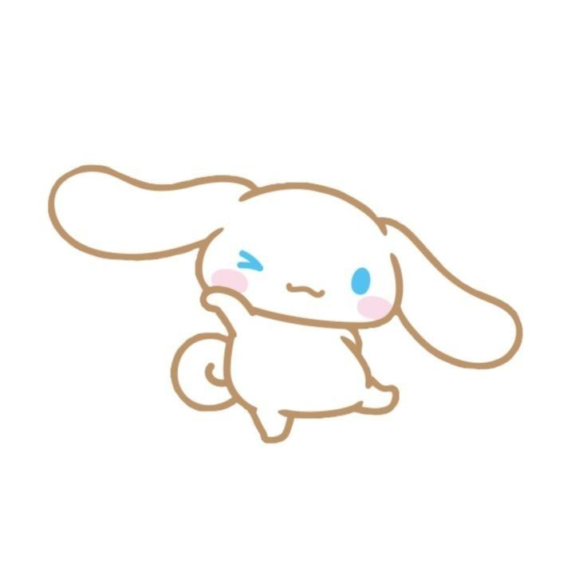

Cinnamoroll says:
“This is important ”
HI DANI, might be super unexpected pero KASI, I'd like to tell you na sana na yk ewan ko if napapansin mo pero I like you, LIKE EWAN WHHSHAHAHAHA, naging crush lang kasi kita nung naging mutuals kita sa isang account na pang ig moots ko. Hindi kita kilala irl pero you're so pretty and adorable on your pictures and I like how your glasses fit you, I MEAN THEY DON'T JUST FIT YOU YK, it's like your glasses is you, you're exactly my type po kaya, tas triny kita add dito sa main ko which is inaccept mo naman, TAS NAGULAT NGA KO NAGREPLY KA SA STORY KO NON, yung baby pics ko eh kaya ko lang naman inistory yon kasi inistory mo din, and then ayun we talked and then u said nice talking to you, akala ko hanggang dun nalang:/, ewan ko if nakita mo ba pero nagnotes pa ko non ng "pwede more pa po?" HWHHAHAHAHAHAHHA tas kinabukasan nagulat ulit ako nagchat ka, tas nag dirediretso na huhuhu YUN LANG. I like you, and I love how I'm getting to know you more and more which makes me like you even more, Sana hindi po maging weird na gusto ka ng mas matanda sayo, I DIDN'T KNOW TALAGA, akala ko kasi same age lang pero ayun lang. Sana magkamukha po tayo ng feelings babye

“Good luck ☁️💗”